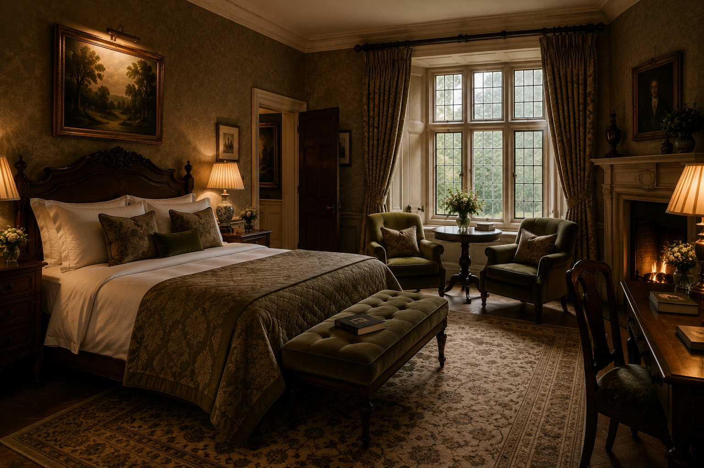
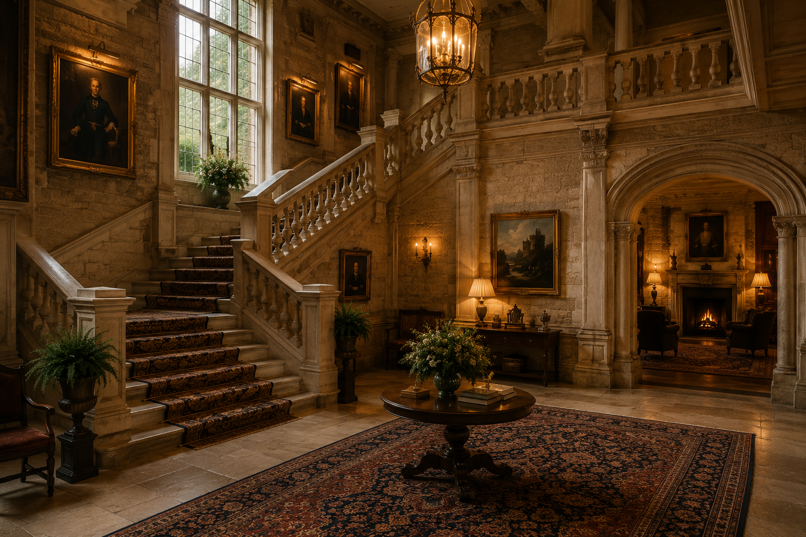
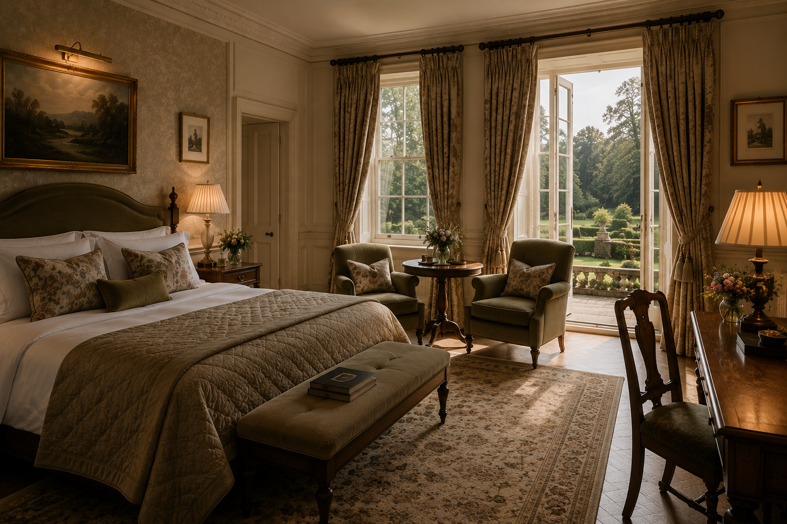
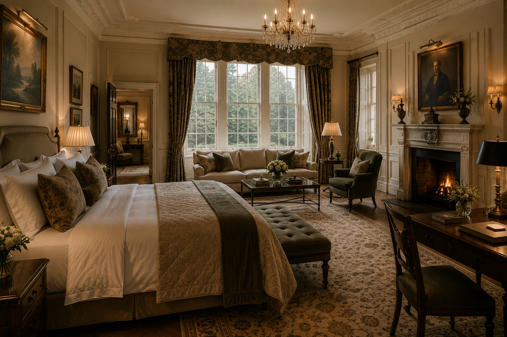
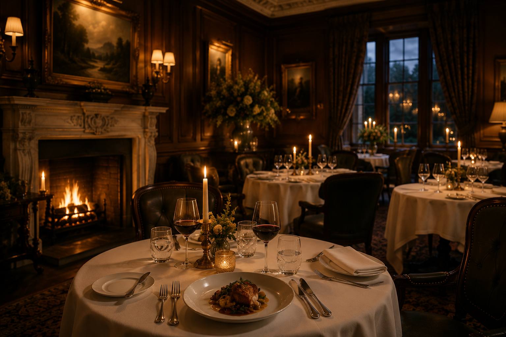
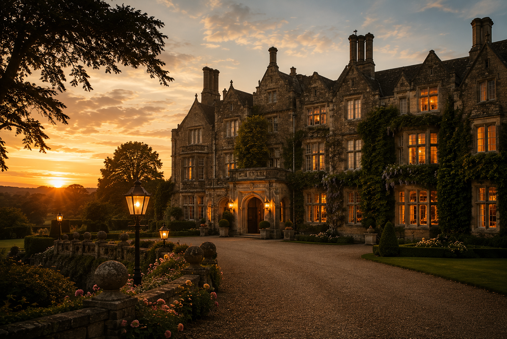
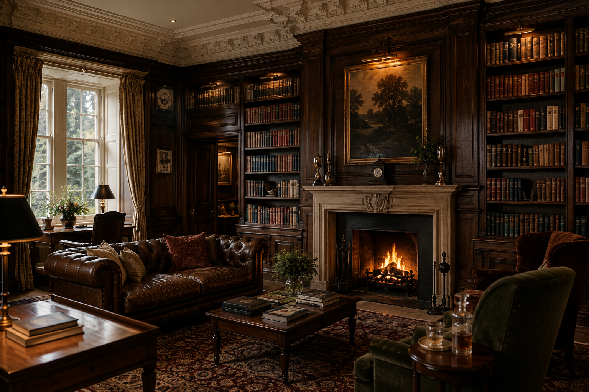
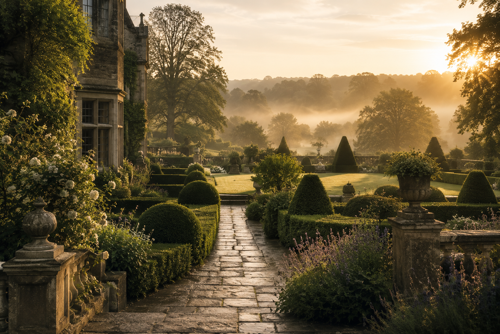
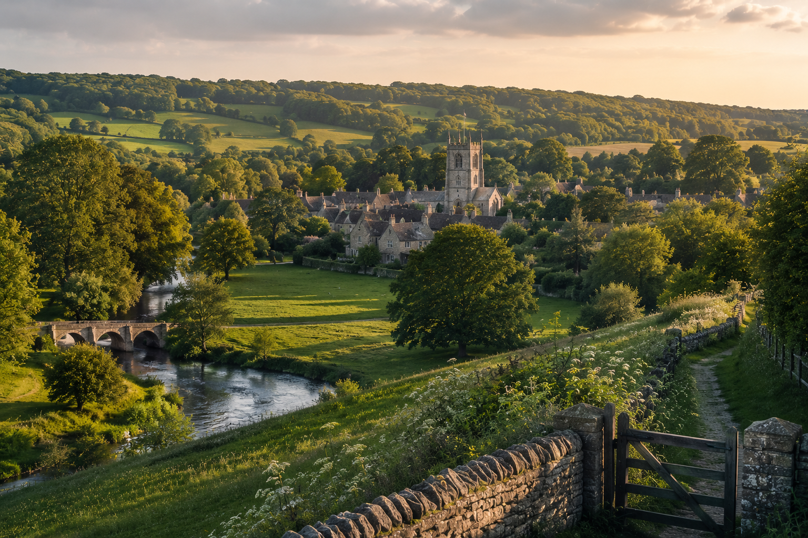

Heritage Room
Classic proportions, warm timber accents, and peaceful garden-facing windows.
From £420 / night
English countryside, forty minutes from London
An intimate countryside estate where timeless British heritage meets modern comfort.
Reserve a stay
The House
Once a private English manor, The Meridian House has been carefully restored into an intimate countryside retreat where heritage architecture, quiet gardens, and warm hospitality come together.
ACCOMMODATIONS
Each room at The Meridian House is shaped by heritage details, soft textures, and views of the surrounding English countryside.

Classic proportions, warm timber accents, and peaceful garden-facing windows.
From £420 / night

A serene room opening toward the estate gardens with layered natural textures.
From £510 / night

The house's signature suite with generous space, refined details, and countryside views.
From £760 / night

EXPERIENCES
From afternoon tea to private garden walks, every experience is designed to slow time and deepen your stay.
A refined British ritual served with seasonal pastries and estate-blended teas.
Ingredient-led menus shaped by local farms, heritage recipes, and modern technique.
Quiet paths, old stone walls, and secluded corners reserved for peaceful wandering.
Restorative treatments inspired by botanicals, warmth, and complete stillness.
GUEST EXPERIENCES
"The Meridian House feels less like a hotel and more like a private countryside residence."
"The gardens, the quiet atmosphere, and the attention to detail made every moment unforgettable."
"An exceptional retreat that perfectly balances heritage charm and modern comfort."
GALLERY
Every corner of the estate is designed to inspire calm, comfort, and quiet discovery.



LOCATION
Located in the English countryside less than an hour from London, The Meridian House offers the perfect balance between accessibility and complete escape. Surrounded by rolling landscapes, historic villages, and quiet gardens, it feels worlds away from the pace of the city.

RESERVATIONS
We look forward to welcoming you to our historic estate. For the best availability and exclusive offers, book directly with us.
Best Rate Guarantee